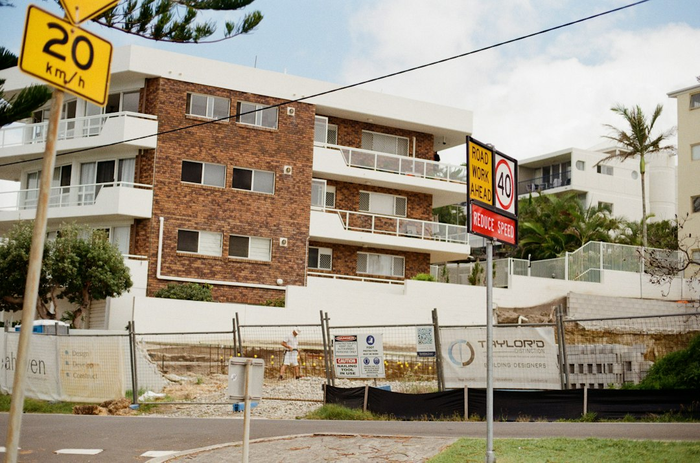

A Brisbane retaining wall enquiry should start with retained height, drainage outlet, surcharge loads, access and nearby structures. The source guide names 8 wall or service paths, including concrete sleeper, timber sleeper, reinforced block, sandstone and boulder, gabion, drainage, engineered approval, and repair or replacement. Where design is required, it refers to Form 15 for design and Form 16 for inspection and compliance, with QBCC licence checks before paying a deposit.
For homeowners comparing retaining wall builders brisbane options, the useful starting point is not the finish, but the site evidence that changes design, drainage and approval questions.
Retaining Wall Builders Brisbane Explained
The published Retaining Walls Brisbane guide frames wall choice around site facts: height, loads, drainage, boundaries and access. That order matters because a tidy garden wall, a boundary replacement and a wall beside a driveway can ask different questions before any material is selected.
Begin with wide photos, rough measurements and notes on what has changed. The source page names cracks, leaning, decayed posts, erosion, wet areas and recent changes above the wall as observations that help separate a surface preference from the actual site problem. A clear enquiry should also record where machinery could enter, where spoil might go, and whether nearby buildings, pools, fences or neighbouring structures sit within the area affected by the wall.
Drainage is part of the structure
The guide treats water as a design issue, not an accessory. It says saturated backfill weighs more than dry backfill and can create hydrostatic pressure, especially when stormwater is pushed into the retained zone. A drainage line that disappears into the soil has not answered the question of where collected water lawfully leaves the site.
For a quote discussion, ask how clean aggregate, filter fabric, subsoil pipe and outlet position will work together. If the job is a repair, ask whether the cause is being identified before the wall is rebuilt. Leaning, bulging, cracking, decay or undermining may point to different scopes, and a replacement that repeats the same drainage path can leave the original problem unresolved.
Choosing a wall system by site problem
The source guide describes several wall systems, each tied to conditions rather than appearance alone. Concrete sleeper systems are presented for replacements, boundaries and cut-and-fill projects where post embedment, access and drainage are assessed together. Timber sleeper systems are described for lower garden walls and terraces where member selection, moisture exposure, drainage and maintenance are explicit.
Reinforced block walls suit engineered loads, tighter footprints and finished residential walls that need coordinated footing and drainage details. Sandstone and boulder walls rely on gravity or batter, so bearing, block geometry, machinery access and runoff management have to fit the site. Gabion baskets are linked with landscape terraces and erosion settings where foundation preparation, filter separation and basket specification are important. A separate Brisbane retaining wall builder guide can help compare how those planning questions are presented in another format.
Who this applies to
This guide is most useful for owners preparing a residential wall enquiry, owners dealing with a failing existing wall, and buyers who need to understand why a slope, driveway, pool, fence or neighbouring structure may affect the scope. It also suits garden terrace projects where a lower wall still needs drainage and access thinking before materials are priced.
- Replacement work: record movement, visible defects and water symptoms before asking for a like-for-like rebuild.
- Boundary work: note fence lines, neighbouring levels and any structures close to the retained zone.
- Steeper sites: measure retained height carefully and record whether access is from above, below or the side.
- Approval-sensitive sites: ask which conditions trigger building approval, engineering or certification.
Approval and licensing questions to ask
The source page says Brisbane City Council describes limited circumstances where a retaining wall may be built without building approval, and that Queensland Development Code conditions sit behind those exemptions. Height is only one test. Surcharge loads, nearby walls or buildings, boundary position, easements, overlays and protected vegetation can each change the path.
Where design is required, the guide says it comes from an engineer registered with the Board of Professional Engineers of Queensland. It also links the certification trail to Form 15 for design and Form 16 for inspection and compliance of the built work. For construction, it says regulated building work above the statutory value threshold should involve a QBCC licence covering the class of work, and that the public QBCC licence search is worth using before a deposit is paid.
- Measure retained height. Record the base of the wall to the finished soil level behind it, and note if buried courses may change the true height.
- Map water movement. Photograph downpipes, wet areas, erosion, outlets and any point where water enters or leaves the retained zone.
- Identify nearby loads. List driveways, slabs, pools, sheds, fences, neighbouring walls and buildings close to the wall.
- Check approval triggers. Ask whether height, surcharge, boundaries, easements, overlays or protected vegetation change the approval pathway.
- Verify roles. Confirm who designs, who certifies, who builds, and whether the relevant QBCC licence applies before paying a deposit.
| Option | Best question to ask | Evidence to prepare |
|---|---|---|
| Concrete sleeper | Are post embedment, access and drainage resolved together? | Retained height, boundary position, machinery access |
| Timber sleeper | How will moisture exposure, drainage and maintenance be handled? | Wet areas, decayed members, soil contact points |
| Reinforced block | Are footing, load and drainage details coordinated? | Nearby structures, driveway or other surcharge clues |
| Sandstone or boulder | Do bearing, batter and machinery access suit the block? | Slope photos, access route, runoff path |
| Gabion | Are foundation preparation and filter separation specified? | Erosion signs, soil movement, intended terrace layout |
Common questions
What should I send before asking for a retaining wall quote? Send wide photos, rough measurements, retained height, access notes, water symptoms and nearby structures. The source guide says those facts help turn a material preference into a clearer written scope.
Is wall height the only approval issue in Brisbane? No. The guide says height is only the first test, with surcharge loads, proximity to buildings or other walls, boundary position, easements, overlays and protected vegetation also relevant.
Why is drainage discussed so early? The guide says saturated backfill weighs more than dry backfill and can push against a wall. A proper drainage discussion should include aggregate, filter fabric, subsoil pipe and a visible, lawful outlet.
Which wall material is best? There is no single best material in the supplied guide. It compares concrete sleeper, timber sleeper, reinforced block, sandstone and boulder, and gabion systems by site problem, access, drainage and load conditions.
This guide covers practical site, drainage, material, approval and licence questions for residential retaining wall planning in Brisbane.